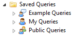
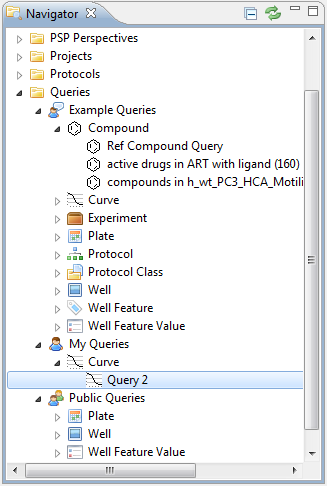

You can find your existing queries in the navigator.

There are 3 categories of Saved Queries:
- Private:
- Can only be created by YOU
- Saved as private (not public nor example is checked)
- Public:
- Can be created by anyone (including you)
- Saved as public (public is checked)
- Example:
- Can be created by anyone (including you)
- Example Queries are Public by default

You can use the triangle before the name in the navigator to open the list.
Note: The triangle only appears when the Navigator View has focus or if you hover over one of its items.
There are 11 Types of queries, based on the Result Type. You can also open these by clicking on the triangle before the name.
To open a saved query, double-click on its name.